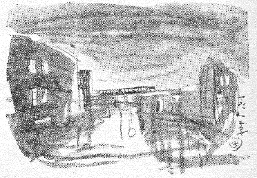

| 数寄屋橋夜景 | |
| 木村 荘八 | |
| 青空文庫 (2012) | |
数寄屋橋夜景
木村荘八
僕の描いたこの絵は果して非常に
「東京」の感じがするのかどうか、ぼくにはわからない。ぼくには「東京の」といふよりもこの暗い夜景は「銀座近くの」感じがせずに山谷堀でも描いてゐるやうな心持だつたのが実感だ。尤も空の重く垂れた、花ぐもりといふにはまだ寒すぎる晩だつた。この絵を数寄屋橋の上から描いた晩は。

注文は「なるべく東京の感じのするところ」といふのである。ぼくはそれで突差に思ひ出したのは、いつか大阪の友人の斎藤清二郎に聞いた談片で、ぼくが彼に大阪から来てどこが一番東京らしいかと尋ねた時、斎藤は答へて、高架線が新橋から有楽町へかけて乗りこむところが一番「東京」らしい感じがする、水に沿うて都心を走りぬけるところである。一体高架線といふものが大阪にはないから、といふことだつた。――しかしすでに一昔も前の談片だから、その後、状態は東京も大阪も互に変つてゐることだらう。
なにしろ、それを思ひ出して、数寄屋橋界隈へ行つて見たわけである。ぼくが大阪で大阪らしく感じるのは、いつも汽車が梅田近くへ来て煙突の林立する町家を見る時に、大阪だなアと思ふ。しかし、これは実は汽車が大阪に近づくので、それで感じるのかもしれない。梅田近くの情景が殊さらに大阪らしいといふわけには限らないかもしれない。――同じやうに、斎藤清二郎も水に沿うた有楽町近くの風致を東京らしいと思つたのは、やはり西から東京へ来て、この辺でいよいよ「東京だ」と汽車の中で思ふ感じが強かつたためではないかしらん。これが北京とすれば、汽車が北京へ近づいてぐるぐると城壁に沿うて走る時は、これこそ文字通り北京に近いし、北京そのものだ。どつちみち東京はその特色を昔から見ると随分失つた。（昭和十六年稿）
底本：「東京の風俗」冨山房百科文庫、冨山房
１９７８（昭和53
）年3
月29
日第1
刷発行
１９８９（平成元）年8
月12
日第2
刷発行
底本の親本：「東京の風俗」毎日新聞社
１９４９（昭和24
）年2
月20
日発行
※図版は、底本の親本からとりました。
入力：門田裕志
校正：伊藤時也
２００９年1
月6
日作成
青空文庫作成ファイル：
このファイルは、インターネットの図書館、青空文庫（http://www.aozora.gr.jp/）で作られました。入力、校正、制作にあたったのは、ボランティアの皆さんです。